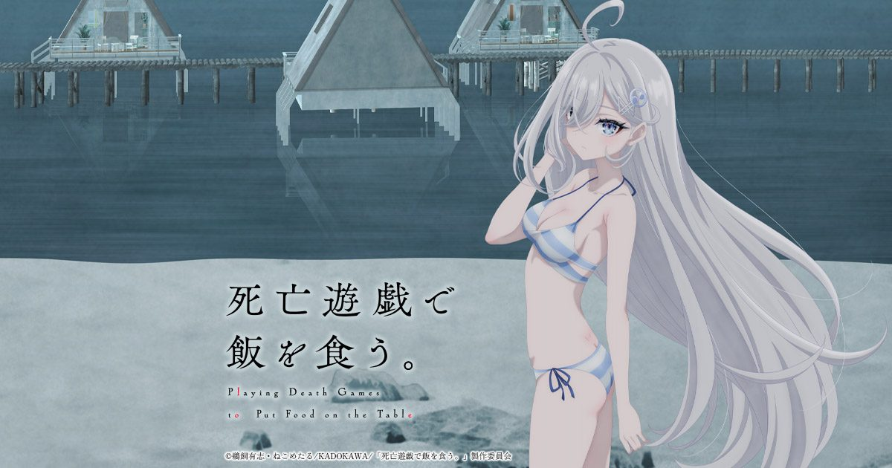

2026-11-22 · 新番前瞻 / 制作结构

11 月 22 日，MF 文库 J 秋之学园祭 2026 的舞台上，官方宣布 《靠死亡游戏混饭吃。》动画续篇制作决定。同时放出的东西只有三样： 一张主角幽鬼（Yuki）的「超」先导视觉图、 一句「请期待后续报道」、和一句宣传语—— 「──この世界で、生きてみようと思った」（我想试着在这个世界里活下去）。
形态没说，档期没说，班底没说。 大多数报道到这里就结束了，标题写「续篇制作决定」，正文三百字。 但「没说」本身就是信息——它说的是这部作品眼下真正卡在哪里。
日本动画的宣传物料有等级：teaser（特报）→ 先导视觉图 → 主视觉。 「超先导」是这几年的新造词，比先导还早一步。区别不在文案，在图的信息密度： 常规先导图通常已经有构图、有场景、有两个人以上的站位关系； 超先导往往只有一个角色、一个姿态、一个背影， 因为此时连「这一局里有几个人」都还没定。
这次给的就是单人幽鬼。没有其他玩家、没有游戏场地、没有规则暗示。 换句话说，制作委员会已经成立、预算已经落定、宣传口已经开动， 但剧本还没写到能画分镜的程度。 判断一部续作的真实进度，看图的密度比读公告准得多。
TV 一期共 11 集，2026 年 1 月 7 日开播（首集 60 分钟），3 月 18 日完结， Studio DEEN 制作，导演上野壮汰，系列构成池田临太郎，人设尾崎绘里， 音乐松本淳一，音响监督近室德义，幽鬼由三浦千幸配音。
然后 7 月 10 日，《44:CLOUDY BEACH》以「剧场版」的名义在日本限定上映 两周；7 月 13 日，也就是三天后，直接上 Netflix 全球。 MyAnimeList 干脆把它记作第 12 集——这个细节比任何宣传语都诚实： 它本质上是一集被搬进影院放的 TV 集，只不过规格抬高了。
所以这次「续篇」的形态之争不是从零开始猜，而是有两条现成的路， 各自留下了一份成本清单。
| 维度 | TV 路线（一期已走） | 剧场版路线（44 局已走） |
|---|---|---|
| 内容量 | 11 集 ≈ 原作 4–5 卷 | 一局 ≈ 一卷多 |
| 发行窗口 | 周更 11 周 + 同步配信 | 影院 2 周 → 3 天后上 Netflix |
| 回款节奏 | 配信权 + 碟片按卷，摊在三个月 | 平台买断快，影院票房基本可忽略 |
| 话题热度 | 持续 3 个月，适合养 IP | 上线那周爆一次，之后靠算法 |
原作是鵜飼有志执笔、ねこめたる插画，2022 年 11 月起在 MF 文库 J 刊行， 曾获第 18 届 MF 文库 J 轻小说新人奖「优秀奖」， 并在《这本轻小说真厉害！2024》新作榜排第一。 单行本第 10 卷 6 月 25 日发售，第 11 卷排到 12 月 25 日。
这两个日期放在一起看，事情就清楚了。 TV 一期吃掉大约 4–5 卷；剧场版做到第 44 局，大致在 7 卷前后的位置。 也就是说，动画已经贴到原作前线了。 要做 TV 二期（12–13 集），至少得再有 5–6 卷的内容， 而第 11 卷圣诞节才上市。
所以「形态未定」不是营销悬念，是三道约束的交点：
库存：TV 二期要等两卷以上；剧场版只要「一局」，现成的就够。 结构：这作品的每一局都是独立规则，天然单元剧。 TV 化会稀释紧张感——观众看三集就学会「这局结束她一定活着」， 死亡游戏的赌注变成了流程。剧场版反过来，100 分钟压在一个规则上， 无处可逃。 窗口：两周影院 + 三天上 Netflix，比 11 周周更回款快、 全球触达集中，是 KADOKAWA 这两年最顺手的一条路。
三条都指向剧场版。但 TV 的理由也硬：11 集是低成本试错， 碟片按卷卖，且周更能把话题维持三个月。 再加上一个数字——TV 播出后，原作 1–9 卷累计 约 60 万册。这个量级够撑一部 TV 二期， 却不太够撑第二次剧场版的宣发规模。
综合起来，最合理的解释是：他们在等 12 月 25 日第 11 卷的成绩。
卖得动 → 有内容、有预算、有理由做 TV 二期，且能顺手把 31–43 局补上； 卖不动 → 做成一部一话完结式的剧场版，把 IP 收在一个体面的位置。 宣布时间卡在 11 月（第 11 卷预售期），刚好是能看到预售曲线的时候。 这不是阴谋，是轻小说改编最常见的决策节奏： 先宣布生产锁定制作委员会，再让销量决定规模。
这也解释了那句宣传语为什么选「我想试着在这个世界里活下去」。 TV 一期里幽鬼是靠奖金活着的职业玩家，不是「想活」的人。 选择这句，暗示续篇要回答的是「她为什么还要继续玩」， 而不是「她怎么赢下一局」。前者是人物弧，后者是关卡设计—— 这两件事对应的集数完全不一样。
第 44 局已经被剧场版用掉了。TV 二期如果从第 45 局接， 动画观众看到的局号会是 44 → 45， 而中间 31–43 这十三局在动画里是空白的。
这既是坑也是机会。补法有两种： 一种是「回忆局」——每集开头插一段过去的局，成本低但会碎掉叙事； 另一种是干脆用一整季去填 31–43，把「墙之三十」之后的爬升过程讲完。 我们赌后者：因为这作品最稀缺的不是「又一局游戏」， 而是幽鬼从「熟练工」变成「幸存者」的那段心理位移， 而那段正好在 31–43 里。
多数英文站（Anime Corner、ANN 转述）明确写「形态、档期、班底均未公布」。 但至少一家聚合站在稿子里写了「一期与剧场版的完整班底将沿用」。 官方公告与官网并没有逐条列名。
我们的处理是：不采信「班底沿用」为既成事实。 理由很实际——同一套班底（Studio DEEN + 上野壮汰 + 池田临太郎 + 尾崎绘里） 连续做了 TV 与剧场版，沿用是大概率事件，但「大概率」和「已宣布」 在报道里必须分开。这条规则我们自己在写前瞻时也不敢破。
我们的评分：7.6 / 10（前瞻）。 评的是「这次宣布的信息质量」，不是作品本身。 加分项：只给一张图、不硬凑档期，比那种「2027 见」的 空心宣布诚实；宣传语选得准，指向人物而非关卡； 在一个有两套成功形态的 IP 上，愿意把选择题留在桌上而不是先画饼。 扣分项：「超先导」这个词已经是行业黑话了， 对普通观众零信息量；没有给任何一帧能让人判断「这一局是什么规则」的画面； 班底去向留白，导致「是不是换公司」的猜测会先于内容发酵。 一句话：这不是一次内容宣布，是一次排期宣布—— 它告诉你「还有下一部」，但没说「下一部是什么」。
我们的观察：这部作品的改编风格一直有争议。 它敢做意识流、敢在死亡游戏里插入大段静默与错位剪辑， 这类处理在 TV 周更里会被骂「看不懂」， 在剧场版一次放完反而成立。形态不只是发行方式， 它决定了观众有没有耐心。换句话说，这部作品选形态， 其实是在选自己的观众。
我们的观点：一个 IP 同时有 TV 与剧场版两条腿， 最危险的不是选错，是来回跳。观众一旦开始把 TV 当「铺垫」、 把剧场版当「正片」，中间那些局就没人认真看了。 而这部作品的好，恰恰在于每一局都能独立成立—— 第 44 局不需要你看过第 43 局。这个优点，会在「TV 铺垫 / 剧场版正片」 的二分法里被慢慢磨掉。
我们的案例对比：同月我们写过《笔与手铐与事实婚》 （2027/1/9，25:00 深夜档），那是典型的「TV 单腿」路线： 靠深夜档的口碑慢慢爬。而《靠死亡游戏混饭吃》走的是 「TV 试水 → 剧场版收割 → Netflix 全球」三段式。 两条路线的差别不在制作水准，在谁来付第一笔钱： 前者是电视台与制作委员会，后者是流媒体平台。 平台付钱，就得按平台的节奏交片——这也解释了为什么 剧场版只给两周影院。
如果只记一件事，记这个： 当一部动画宣布续篇却不公布形态时，几乎总是原作不够了。 不是保密，是算不出来。
而对观众来说，这其实是好消息——它意味着这部作品没有被当成 「趁热再榨一季」的快消品，而是被放在一张要算产能、算库存、 算回款的表上。算得慢，通常做得久一点。
信息备注：续篇制作决定于 2026 年 11 月 22 日在「MF 文库 J 秋之学园祭 2026」 舞台活动公布，同时公开幽鬼「超」先导视觉图；官方未公布形态、档期与制作班底。 TV 一期 11 集于 2026 年 1 月 7 日至 3 月 18 日播出（Studio DEEN， 导演上野壮汰）；《44:CLOUDY BEACH》2026 年 7 月 10 日起日本限定两周上映， 7 月 13 日上线 Netflix。原作小说第 10 卷 2026 年 6 月 25 日发售， 第 11 卷定于 12 月 25 日。文中「1–9 卷累计约 60 万册」引自日方报道， 统计口径为动画播出后。本文对「班底沿用」一说按未确认处理。